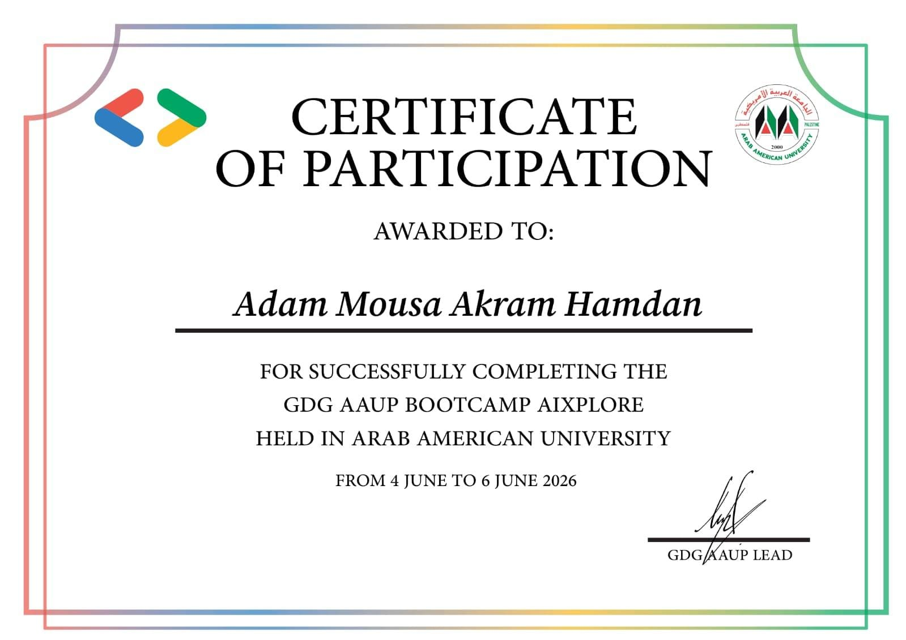

View original ↗AI · PARTICIPATION
GDG AAUP Bootcamp AIXplore
Certificate of participation for completing the AIXplore bootcamp held at Arab American University from 4–6 June 2026.
- Issuer
- GDG AAUP · Arab American University
- Context
- Artificial intelligence exploration